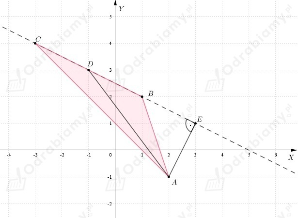

| Punkty A, B, C są współliniowe wtedy i tylko wtedy, gdy suma długości dwóch spośród odcinków AB, BC, AC jest równa długości trzeciego z nich. |
a)
Sprawdzamy współliniowość punktów
Zatem punkty A, B, C są współliniowe.
b)
Sprawdzamy współliniowość punktów
Zatem punkty A, B, C są współliniowe.
c)
Sprawdzamy współliniowość punktów
Zatem punkty A, B, C nie są współliniowe.
d)
Sprawdzamy współliniowość punktów
Zatem punkty A, B, C są współliniowe.
a)
Wyznaczamy długości boków trójkąta ABC.
Sprawdzamy, czy trójkąt ABC jest równoramienny
zatem trójkąt ABC jest trójkątem równoramiennym.
Sprawdzamy, czy trójkąt ABC jest prostokątny
Zatem na mocy twierdzenia odwrotnego do twierdzenia Pitagorasa
wnioskujemy, że trójkąta ABC jest trójkątem prostokątnym.
b)
Wyznaczamy długości boków trójkąta ABC.
Sprawdzamy, czy trójkąt ABC jest równoramienny
zatem trójkąt ABC jest nie jest trójkątem równoramiennym.
Sprawdzamy, czy trójkąt ABC jest prostokątny
Zatem na mocy twierdzenia odwrotnego do twierdzenia Pitagorasa
wnioskujemy, że trójkąta ABC jest trójkątem prostokątnym.
a)
Wyznaczamy długości boków trójkąta ABC.
Zauważamy, że
zatem trójkąt ABC jest trójkątem równoramiennym.
Natomiast
więc na mocy twierdzenia odwrotnego do twierdzenia Pitagorasa
trójkąt ABC jest również trójkątem prostokątnym.
co należało wykazać.
Wiemy, że przeciwprostokątna trójkąta prostokątnego jest średnicą okręgu opisanego na
tym trójkącie. Środek okręgu opisanego leży dokładnie na środku przeciwprostokątnej.
Niech S będzie środkiem okręgu opisanego na trójkącie ABC.
Zauważamy, że przeciwprostokątną trójkąta ABC jest bok AC (najdłuższy bok trójkąta).
Dostajemy
b)
Wyznaczamy długości boków trójkąta ABC.
Zauważamy, że
zatem trójkąt ABC jest trójkątem równoramiennym.
Natomiast
więc na mocy twierdzenia odwrotnego do twierdzenia Pitagorasa
trójkąt ABC jest również trójkątem prostokątnym.
co należało wykazać.
Wiemy, że przeciwprostokątna trójkąta prostokątnego jest średnicą okręgu opisanego na
tym trójkącie. Środek okręgu opisanego leży dokładnie na środku przeciwprostokątnej.
Niech S będzie środkiem okręgu opisanego na trójkącie ABC.
Zauważamy, że przeciwprostokątną trójkąta ABC jest bok AC (najdłuższy bok trójkąta).
Dostajemy
Niech A(1, -4) będzie jednym z wierzchołków kwadratu ABCD.
Wiemy, że
Punkt przecięcia przekątnych kwadratu ABCD należy do prostej
a współrzędne tego punktu są liczbami ujemnymi.
Oznaczamy prze B, C, D trzy pozostałe wierzchołki kwadratu, natomiast
przez S punkt przecięcia przekątnych kwadratu ABCD.
Skoro
to wnioskujemy, że długość boku kwadratu wynosi
Punkt S leży na prostej y=x-1, zatem
Z treści zadania wiemy, że
wnioskujemy, że x<0.
Długość przekątnej kwadratu wynosi
Natomiast odcinek AS jest połową długości przekątnej kwadratu, więc
Zatem wnioskujemy, że
Wyznaczamy współrzędne wierzchołka C(xC, yC).
Niech odcinek AC będzie przekątna kwadratu, zatem korzystając z definicji
środka odcinka dostajemy
Zatem
Wyznaczamy współrzędne wierzchołków D(xD, yD) i B(xB, yB).
Wracamy do pierwszego równania i dostajemy
Wnioskujemy, że
Wierzchołki kwadratu, to punkty o współrzędnych
Wiemy, że punkty
są wierzchołkami trójkąta ABC.
Należy obliczyć długość środkowej AD oraz wysokości AE.
Narysujmy trójkąt ABC w układzie współrzędnych.

Obliczamy długość środkowej AD.
Wyznaczmy współrzędne punktu D, który jest środkiem odcinka BC.
Zatem
Długość odcinka AE to odległość punktu A od prostej CB.
Wyznaczamy równanie prostej CB
Zapisujemy równanie prostej w postaci ogólnej
Obliczamy długość wysokości AE korzystając ze wzoru na odległość punktu od prostej.
a)
Wyznaczamy równanie prostej AB
Zatem punkty, które leżą na prostej AB mają współrzędne postaci
Niech
Szukamy współrzędnych punktów, których odległość od punktu A jest równa 2, zatem
Zatem szukane punkty, to
b)
Prosta przechodząca przez punkt A, która jest równo oddalona od punktu B i C, to
prosta, która przechodzi przez punkt A i jest równoległa do prostej przechodzącej przez punkty B i C
oraz prosta, która przechodzi przez punkt A i środek odcinka BC.
Rozważamy przypadek prostej, która przechodzi przez punkt A i jest równoległa
do prostej przechodzącej przez punkty B i C.
Wyznaczamy współczynnik kierunkowy prostej BC.
Prosta równoległa do prostej BC ma współczynnik kierunkowy równy 1/2.
Szukana prosta ta przechodzi przez punkt A, więc
Zatem
Rozważamy przypadek prostej, która przechodzi przez punkt A i środek odcinka BC.
Niech S będzie środkiem odcinka BC.
Wyznaczamy równanie prostej SA.
Podstawiamy do równania prostej współrzędne punktu A
Zatem
Proste spełniające warunki zadania, to
a)
Wiemy, że
zatem równanie okręgu przyjmuje postać
Okrąg w układzie współrzędnych
Punkt przecięcia z osią OX (y=0)
Zatem punkty przecięcia okręgu z osią OX, to
Punkt przecięcia z osią OY (x=0)
Zatem punkty przecięcia okręgu z osią OY, to
b)
Wiemy, że
zatem równanie okręgu przyjmuje postać
Okrąg w układzie współrzędnych
Punkt przecięcia z osią OX (y=0)
Zatem punkty przecięcia okręgu z osią OX, to
Punkt przecięcia z osią OY (x=0)
Zatem punkty przecięcia okręgu z osią OY, to
c)
Wiemy, że
zatem równanie okręgu przyjmuje postać
Okrąg w układzie współrzędnych
Punkt przecięcia z osią OX (y=0)
Zatem punkty przecięcia okręgu z osią OX, to
Punkt przecięcia z osią OY (x=0)
Zatem punkty przecięcia okręgu z osią OY, to
d)
Wiemy, że
zatem równanie okręgu przyjmuje postać
Okrąg w układzie współrzędnych
Punkt przecięcia z osią OX (y=0)
Zatem okrąg nie ma punktów wspólnych z osią OX.
Punkt przecięcia z osią OY (x=0)
Zatem okrąg nie ma punktów wspólnych z osią OY.
Wiemy, że punkt (1, 2) jest środkiem okręgu do którego należy punt (3, 2).
a)
Wyznaczamy równanie okręgu
Podstawiamy do równania współrzędne punktu (3, 2)
Zatem równanie okręgu przyjmuje postać
b)
Wyznaczamy punkty przecięcia okręgu z osią OY (x=0).
Zatem punkty przecięcia okręgu z sią OY, to
c)
Przyjmijmy oznaczenia jak na rysunku poniżej
Wiemy, że
Zatem trójkąt możemy wywnioskować, że trójkąt CSB jest trójkątem szczególnym
o kątach 30°, 60°, 90°.
Kąt CSB ma miarę 60°, zatem kąt ASB ma miarę 120°.
Wobec tego pole zacieniowanego fragmentu to różnica pomiędzy polem wycinka
kołowego, a polem trójkąta ASB.